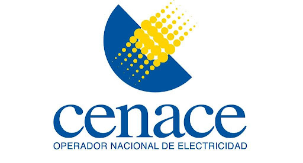

Experiencia Profesional

- Pasante en Subgerencia de Servicios de Tiempo Real - Operador Nacional de Electricidad: CENACE
- Marzo 2020 - Junio 2020
-
Análisis y Visualizacion de Datos del Sistema de Medición Comercial (SIMEC) con Microsoft Excel.
-
Desarrollo Front-End de una Pagina Web utilizando HTML, CSS y React.
-
Desarrollo de un script para Cálculo de Disponibilidad de Sistemas Serie y Paralelo con Python.